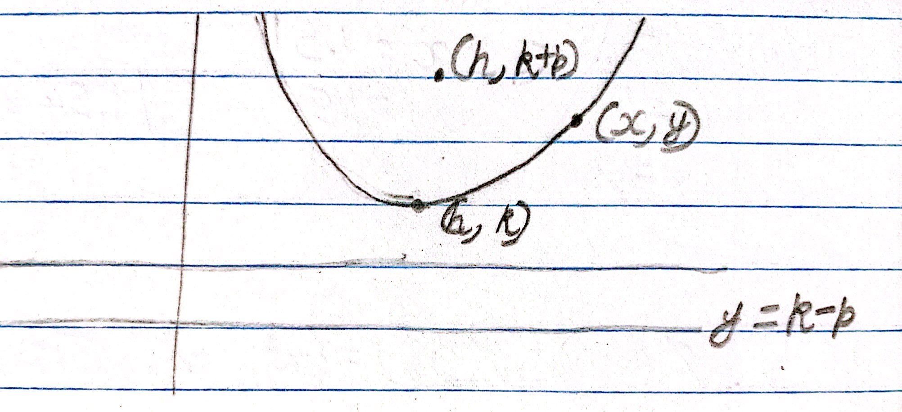
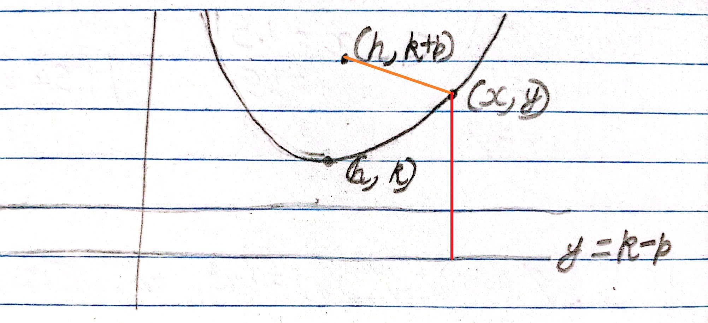
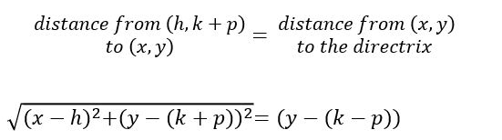
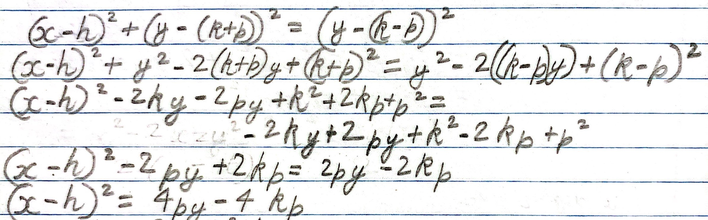
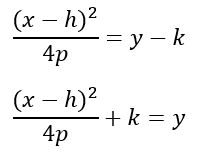

Here I have a parabola with the vertex at point (h, k) and the focus at (h, k+p) (this means that the directrix is at y = k - p):
The drawing is not to scale, but the distance between (h, k+p) to (x, y) and (x, y) to the directrix is equal:
We can use the pythagoras theorem here:
We can expand and simplify:
So we end up with:
